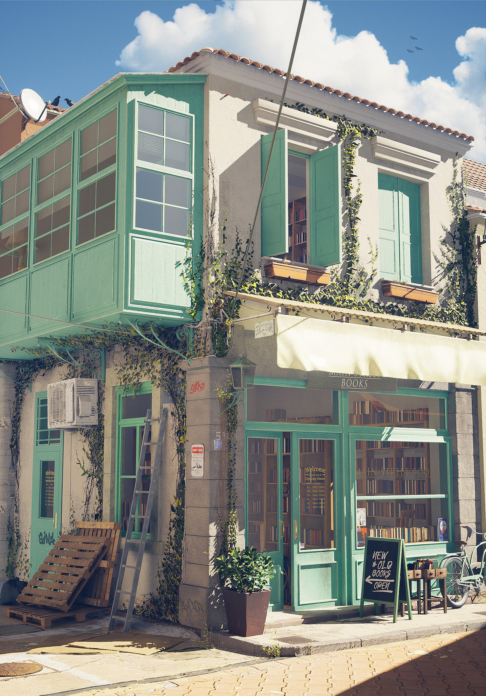

Unreal Bookstore
2022
Following the release of Unreal Engine 5.0 in 2022, I wanted to spend some time exploring new
system features. Over the course of a break I created a small test environment in Unreal Engine
to experiment with the lighting workflow and evaluate how Lumen handled indirect lighting, reflections, and scene mood in real time.
The environment was fully modelled and textured by me using Maya and Substance, with a small number of Megascans assets
incorporated to help dress the scene and add additional detail. The project served as a focused lighting and environment test,
allowing me to explore the practical benefits of Unreal Engine 5’s real-time global illumination compared to previous lighting workflows.
Tools used: Unreal Engine 5 / Maya / Zbrush / Substance / Photoshop
My role: Asset creation / Lighting
